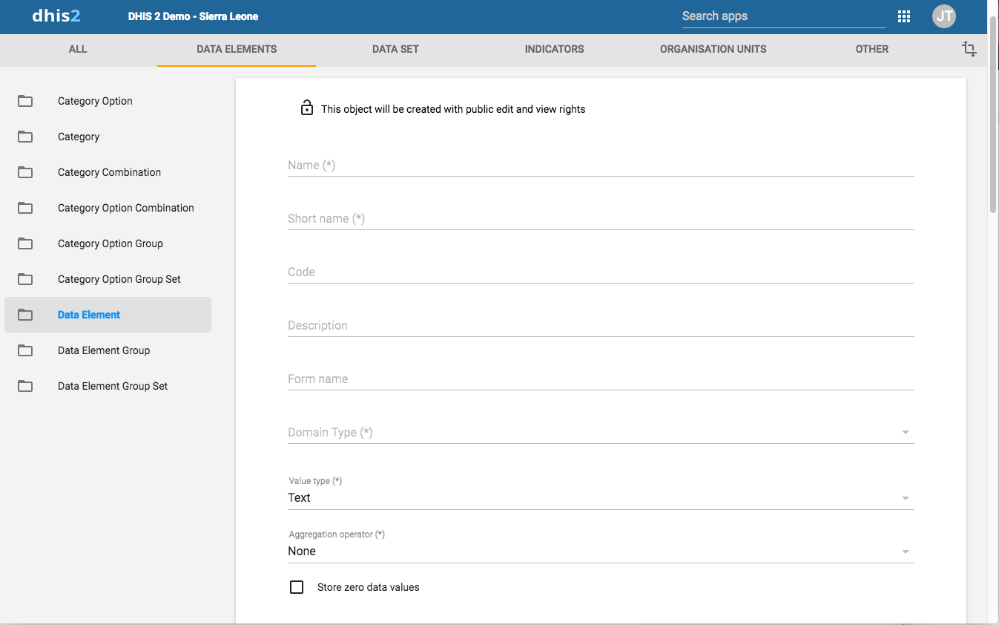

The 'Search by name' allows you to filter a range of data elements if you know either the full name of the data element, or just a part of it. Type the name into the search field and any matching data elements are displayed below.
|  |
Click Apps > Maintenance > Data elements > Data Element.
Click the yellow plus button.
In the Name field, define the precise name of the data element.
Each data element must have a unique name.
In the Short name field, define a short name for the data element.
Typically, the short name is an abbreviation of the full data element name. This attribute is often used in reports to display the name of the data element, where space is limited.
(Optional) In the Code field, assign a code.
In many countries data elements are assigned a code.
In the Description field, type a description of the data element. Be as precise as possible and include complete information about how the data element is measured and what its purpose is.
In the Form name field, type an alternative name of the data element. This name can be used in either section or automatic data entry forms. The form name is applied automatically.
In the Domain type field, select whether the data element is an aggregate or tracker type of data element.
In the Value type field, select the type of data that the data element will record.
Table 5.2. Value
|
Value type |
Description |
|---|---|
|
Integer |
Any whole number (positive and negative), including zero. |
|
Positive integer |
Any whole number greater than (but not including) zero. |
|
Negative integer |
Any whole number less than (but not including) zero. |
|
Positive of zero integer |
Any positive whole number, including zero. |
|
Number |
Any real numeric value with a single decimal point. Thousands separators and scientific notation is not supported. |
|
Unit interval |
Any real number greater than or equal to 0 and less than or equal to 1. |
|
Percentage |
Whole numbers inclusive between 0 and 100. |
| Coordinate |
A point coordinate specified as longitude and latitude in decimal degrees. All coordinate should be specified in the format "-19.23 , 56.42" with a comma separating the longitude and latitude. |
|
Text |
Textual value. The maximum number of allowed characters per value is 50,000. |
|
Long text |
Textual value. Renders as text area in forms. |
|
File |
A file resource where you can store external files, for example documents and photos. |
|
Date |
Dates render as calendar widget in data entry. |
|
Time |
Time is stored in HH:mm format. HH is a number between 0 and 23 mm is a number between 00 and 59 |
|
Username |
This will be populated with the username of the user which performs data entry automatically during the data entry process. |
|
Yes/No |
Boolean values, renders as drop-down lists in data entry. |
|
Yes only |
True values, renders as check-boxes in data entry. |
In the Aggregation operator field, select the default aggregation operation that will be used on the data element.
Most data elements should have the Sum option set. This includes all data elements which should be added together. Other data elements, such as staffing levels, should be set to use the Average operator, when values along the time dimension should not be added together, but rather averaged.
Table 5.3. Aggregation operators
|
Aggregation operator |
Description |
|---|---|
|
Average |
Average the values in both the period as and the organisation unit dimensions. |
|
Average (sum in orgunit hierarchy) |
Average of data values in the period dimension, sum in the organisation unit dimensions. |
|
Count |
Count of data values. |
|
Min |
Minimum of data values. |
|
Max |
Maximum of data values. |
|
None |
No aggregation is performed in any dimension. |
|
Sum |
Sum of data values in the period and organisation unit dimension. |
|
Standard deviation |
Standard deviation (population-based) of data values. |
|
Variance |
Variance (population-based) of data values. |
If you want to save zeros for a particular reason, select Store zero data values. By default, DHIS 2 does not store zeros entered in the data entry module.
In the URL field, enter a link to an in-depth description of the data element.
For example a link to a metadata repository or registry that contains detailed technical information about the definition and measurement of the data element.
In the Category combination field, define which category combination the data element should have. This is also known as the "disaggregation".
Select an Option set.
Option sets are predefined lists of options which can be used in data entry.
Select an Option set for comments.
Option sets for comments are predefined lists of options which can be used to specify standardized comments for data values in data entry.
Select a Legend set.
Legend sets are used in the GIS app to display certain data elements with certain icons.
Set the Aggregation levels to allow the data element to be aggregated at one or more levels:
In the left pane, select the levels you want to assign to the data element.
Click the right arrow to assign the aggregation levels.
The aggregation levels option allows the data element to be aggregated at one or more levels.
By default, the aggregation will start at the lowest assigned organisation unit. If you for example select "Chiefdom", it means that "Chiefdom", "District", and "National" aggregates use "Chiefdom" (the highest aggregation level available) as the data source, and PHU data will not be included. PHU data will still be available for the PHU level, but not included in aggregations to the levels above.
If you select both "District" and "Chiefdom", it means that the "District" and "National" level aggregates use District data as their source, "Chiefdom" will use Chiefdom, and "PHU" will use PHU.
If applicable, enter custom attributes values, for example Classification or Collection method.
You set custom attributes in Data administration > Attribute. For more information about how to use attributes, refer to the "Attributes" section.
Select a Main data element group.
Data element group sets are only applicable if they have been defined. If data element group sets have been defined, they will appear in the Main data element group list. Select each data element group from the list of group sets provided. Groups can be selected based on if the data element is of aggregate or tracker type.
SelectTracker-based data.
Click Save.